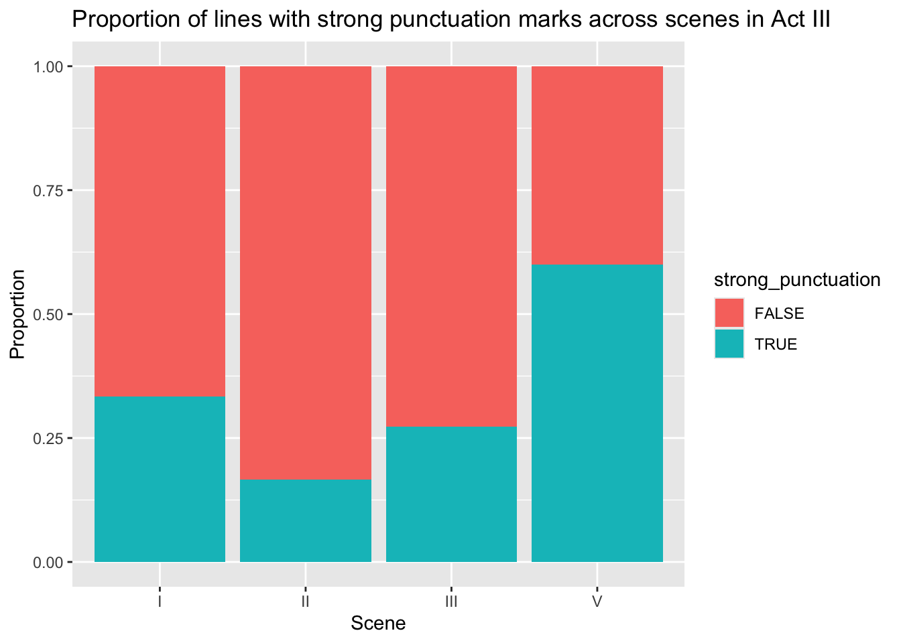
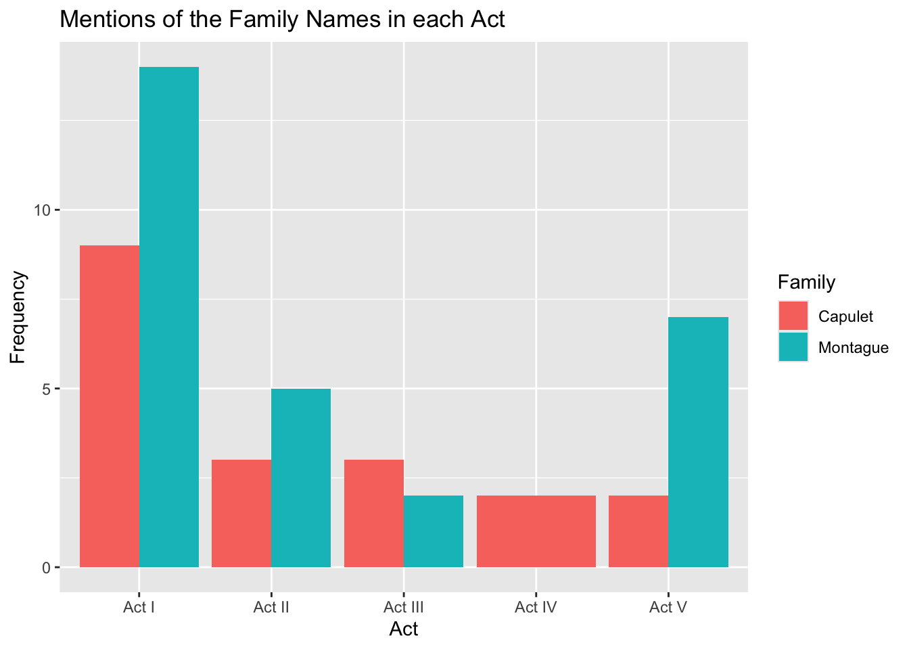

romeo_juliet <- readr::read_csv('https://raw.githubusercontent.com/rfordatascience/tidytuesday/master/data/2024/2024-09-17/romeo_juliet.csv')Shakespeare Textual Analysis
Analysis of Data from Shakespeare’s Plays by the Web’s first edition of the Complete Works of William Shakespeare https://shakespeare.mit.edu
Textual analysis of Shakespeare dialogue in his tragedy “Romeo and Juliet”.
This data was curated by Nicola Rennie from The Complete Works of William Shakespeare the Web’s first edition of the Complete Works of William Shakespeare.
How much is death mentioned in Romeo and Juliet?
To find a bar plot that explains which character mentions the most I filtered through the dialogue and kept only the pieces of dialogue which contained the word “death”.
library(stringr)
library(dplyr)
library(tidyr)
library(ggplot2)
deathrj <- romeo_juliet |>
filter(str_detect(dialogue, "death"))
ggplot(deathrj, aes(x = character)) +
geom_bar(stat = "count") +
labs(title = "Which character mentions death the most?", x = "Character") +
theme(axis.text.x = element_text(angle = 45, hjust = 1)) This first graph shows that Romeo has the most instances of the word “death” in his dialogue and Friar Laurence had the second most in his dialogue. This is interesting because it makes sense that Romeo says death the most as he eventually is one of those who die in this tragedy and Friar Laurence is the one to encourage this from selling a sleeping potion. As Romeo has more dialogue presumably as one of the more main characters it makes sense that he has more mentions by count versus the Apothecary who sells Romeo poison that will kill him.
This next bar plot will look at which act has the most mentions of death using the data frame we created called deathrj for the first graph.
act_num <- deathrj |>
mutate(act = str_extract(act, "(?<=\\s)\\S+")) #extracting only the act number and not the words "Act" in front of it
ggplot(act_num, aes(x = act)) +
geom_bar(stat = "count") +
labs(title = "Which act has most mentions of death?", x = "Act") Romeo and Juliet die in Act 5 Scene 3, so having the most mentions of death in Act 3 is interesting. There may be some foreshadowing happening here or something else significant, such as the death of a different character, which we can look through in the next plot.
Punctuation
This plot will analyze specifically dialogue in Act 3 looking for exclamations and question marks which indicate a strong emotion in the dialogue.
filtered_act_num <- act_num |>
filter(act == "III")|>
mutate(strong_punctuation = str_detect(dialogue, "!+|\\?+")) |> #detecting any of those punctuation marks
mutate(scene = str_extract(scene, "(?<=\\s)\\S+")) #extracting only the scene number, not the word "Scene"
ggplot(filtered_act_num, aes(x = scene, fill = strong_punctuation))+
geom_bar(position = "fill") +
labs(title = "Proportion of strong punctuation marks across scenes", x = "Scene", y = "Proportion")
This shows that there is a greater proportion of strong punctuation in Scene 5 than the rest. So potentially the strongest emotions in relation to death occur here. We will also check which scene had the most mentions of death below.
Act 3
ggplot(filtered_act_num, aes(x = scene)) +
geom_bar(stat = "count") +
labs(title = "Mentions of death across scenes in Act III", x = "Scene", y = "Count")This may indicate that the mentions of death in the other scenes are less emotional and thus use less strong punctuation. We will look for the following word, symbol, or space after death, to see how they compare.
filtered_act_num <- act_num |>
filter(act == "III")|>
mutate(word_after_death = str_extract(dialogue, "death\\s*\\S+")) #extracting moments when there is a word/character after death using spaces
ggplot(filtered_act_num, aes(x = word_after_death))+
geom_bar(stat = "count")+
labs(title = "Death and the Word/Character after in Act III",
x = "Death + Word",
y = "Count")+
theme(axis.text.x = element_text(angle = 45, hjust = 1))The most common thing following death is a comma, indicating that death ends a thought of most of the dialogue in Act III. However, not a complete thought as a period would indicate. This is interesting if we wanted to analyze the style that Shakespeare uses to foreshadow the impending doom of Romeo and Juliet and those others who face tragic endings.
head(filtered_act_num)# A tibble: 6 × 6
act scene character dialogue line_number word_after_death
<chr> <chr> <chr> <chr> <dbl> <chr>
1 III Scene I Mercutio cat, to scratch a man t… 1525 death!
2 III Scene I Benvolio Stand not amazed: the p… 1560 death,
3 III Scene I Benvolio Cold death aside, and w… 1590 death aside,
4 III Scene II Juliet Than the death-darting … 1676 death-darting
5 III Scene II Juliet Some word there was, wo… 1739 death,
6 III Scene II Juliet Hath slain ten thousand… 1745 <NA> Upon viewing the first few lines of this data frame we can see that “Tybalt’s death” is mentioned a great amount, so perhaps the reason death is mentioned so much in this Act is because this character actually did die.
Rivaling Families
Another important factor on the play is the two rivaling families, the Montague’s and the Capulet’s. The entire basis of the play is that Romeo is in love with Juliet but because they are each from the opposing family their love is forbidden. This ultimately leads to the deaths and tragedy that ensues in the play.
Here is further analysis on how family names associate with mentions of death:
These next two plots analyze which characters mention the Montague’s and the Capulet’s the most.
montague <- romeo_juliet |>
mutate(dialogue_lower = str_to_lower(dialogue))|>
filter(str_detect(dialogue_lower, "montague")) |>
filter(character != "[stage direction]") |>
mutate(Family = "Montague") #this is useful for the next plot
montague |>
ggplot(aes(x = character)) +
geom_bar(stat = "count") +
labs(title = "Which character mentions the Montague family the most?", x = "Character") +
theme(axis.text.x = element_text(angle = 45, hjust = 1)) capulet <- romeo_juliet |>
mutate(dialogue_lower = str_to_lower(dialogue))|>
filter(str_detect(dialogue_lower, "capulet")) |>
filter(character != "[stage direction]") |> # we don't care about setting the scene with stage directions, only the dialogue
mutate(Family = "Capulet")
capulet |>
ggplot(aes(x = character)) +
geom_bar(stat = "count") +
labs(title = "Which character mentions the Capulet family the most?", x = "Character") +
theme(axis.text.x = element_text(angle = 45, hjust = 1)) These two plots show that Juliet mentions the Montague family the most and Benvolio, Prince, and Romeo mention the Capulet family the most. This is interesting because Romeo and Juliet have the most dialogue presumably as they are main characters so they mention the family names the most.
The previous code assigned “Montague” to the dialogue which includes the Montagues and “Capulet” to the dialogue including the Capulets. In this next plot I will create a bar plot of the number of mentions of each family in each scene. Then see if this is related to the previous plots that counted the prevalence of the word deaths.
library(dplyr)
#binding both the data frames together to be able to create a bar plot with the bars next to each other for each act
montague_and_capulet <- bind_rows(montague, capulet)
montague_and_capulet_summary <- montague_and_capulet |>
group_by(act, Family) |>
summarize(frequency = n())
montague_and_capulet_summary |>
ggplot(aes(x = act, y = frequency, fill = Family)) +
geom_bar(stat = "identity", position = position_dodge())
Looking back to the acts which have the most mentions of death there is not a clear correlation between these two graphs. Act III has the most mentions of death whereas this graph shows that Act I has the most prevalence of family name mentions. This could be because of the first act being the place where characters and families are established so this may not be especially telling, or conversely it could be foreshadowing for the future tragedies which are coming.